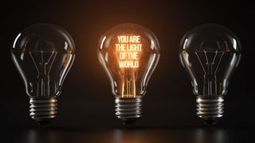

My Story, My Testimony
And they overcame him by the blood of the Lamb, and by the word of their testimony; and they loved not their lives unto the death. The spark necessary to be ignited and to be passionately on fire for Christ starts in the heart. The spark that will ignite the fire that will consume the sacrifice starts by calling out to the true and living God and not to the man made idols of the world. It starts by giving up the worldly and the carnal loves, fully and completely. A refusal to give up the sins of the world is exactly what loving life unto the death is all about. A fiery stream issues forth from our God who is an all consuming fire. A river flows from the sanctuary of God, it gets deep enough to swim in and not become passable but we jump in by pressing the ignition button on our lives. Desperation for positive change has been the number one major catalyst in my life provoking me to reach for more. Rock bottom moments have a way of leaving no other options but Jesus to see a way through them. Testimony is personal, it's unique, and it's the most subjective narrative in existence but the more a testimony can be tied to scripture, the more powerful the testimony becomes for kingdom purposes. My garments have been dipped in blood like Joseph. I have felt like my hands are too bloody and sinful to build anything for the Lord like David was declared to be. I was polluted in my own blood, dying and the Lord passed by me when I was in my own blood and He said to me, Live. Like Paul, I am less than the least of all saints, grateful that the Lamb who is worthy makes me worthy through His precious, powerful blood. Christ is clothed with a vesture dipped in blood; red garments, to make my clothes eternally white and clean. The cross has reversed the curse of the law, has covered and removed all my sin in His blood and all I have to do is believe, receive what He has done and live in the reality of the finished work.
For our gospel came not unto you in word only, but also in power, and in the Holy Ghost, and in much assurance; as ye know what manner of men we were among you for your sake. And ye became followers of us, and of the Lord, having received the word in much affliction, with joy of the Holy Ghost. I just want more of Jesus. I want to say what is right about Him but I also want those words wrapped in power. Through my loneliest days and my darkest nights, the joy of the Lord has truly become my strength. Through troubles I caused myself or different situations I ended up in, joy has sustained me. When I felt like I couldn't take another step or go another day, supernatural joy has kept me. A demonstration of the Spirit and power is my prayer for my words. The discples went forth, and preached ever where, the Lord working with them, and confirming the word with signs following. I pray that God may stretch forth His hand to heal; and that signs and wonders may be done by the name of the holy child Jesus. I believe for increase and I have seen increase in the realm of the supernatural. The higher I go the more of a need I see to go deeper in the word to stay balanced. The further I go in my spiritual walk, the more I realize I have barely even gotten started but I'm determined to joyfully enjoy the journey with the joyful expectation of good along with the miraculous in my life.
Looking unto Jesus the author and finisher of our faith; who for the joy that was set before him endured the cross, despising the shame, and is set down at the right hand of the throne of God. I have no desire to look anywhere else except to Jesus. Jesus had no desire to go anywhere else but to the cross because it was the reason for His entry into this world. At the last moment, in the moment of intense heat and passion, emotion overrode destiny momentarily. Jesus did not act on the desire other than to pray it out, for had He walked away His mission on the earth would not have succeeded. Jesus said, Father, if thou be willing, remove this cup from me: nevertheless not my will, but thine be done. I have had bad days, I have had bad weeks, months, years and even bad decades but with everything I have ever been through added up together I have never had a day as bad as going to the cross. Our totally innocent Savior was condemned to death by torture. Our righteous Master was rejected for not conforming to religioius tradition. The long awaited Messiah was falsely accused, followed by the Jews, mocked, hated on and refused for not much of a reason at all. He was rejected on a personal, national, and even on a global level and the people willingly chose to do the wrong thing knowing full well they were wrong and they continue to slander His name even to this day. Pilate tried to calm the crowd saying, I am innocent of the blood of this just person: see ye to it. Then answered all the people, and said, His blood be on us, and on our children. The motivation and the power that helped Jesus endure is the same thing He is trying to impart into our lives through His word and Spirit. The testimony of the Messiah is: In his humiliation his jugdement was taken away: and who shall declare his generation? for his life is taken from the earth. Will you share the good news of the gospel and tell about the life of the Messiah? Every lifeless and empty life is made full and alive once connected to the true Vine. We receive the sap once connected and we are able to drink the new wine, the fruit of the Vine.
Jesus said, I am the light of the world; he that followeth me shall not walk in darkness, but shall have the light of life. We are made confident in that light, that we can walk forward boldly without stumbling. We can walk forward knowing we can see whatever maybe on the path ahead to trip us up. We can walk knowing that the light can apprehend us, knock us off a high horse and totally blind us to the things of the world. The light can give us encounters and restore our sight both in the realm of the natural and in the realm of the Spirit. Once the light grabs ahold of us we are the light, we still walk in His light and we let the light of the gospel shine through our lives while holding forth the word of life. Ye are the light of the world. A city that is set on an hill cannot be hid. Neither do men light a candle, and put it under a bushel, but on a candlestick; and it giveth light unto all that are in the house. Let your light so shine before men, that they may see your good works, and glorify your Father which is in heaven. Plug into the source and turn the light on!
